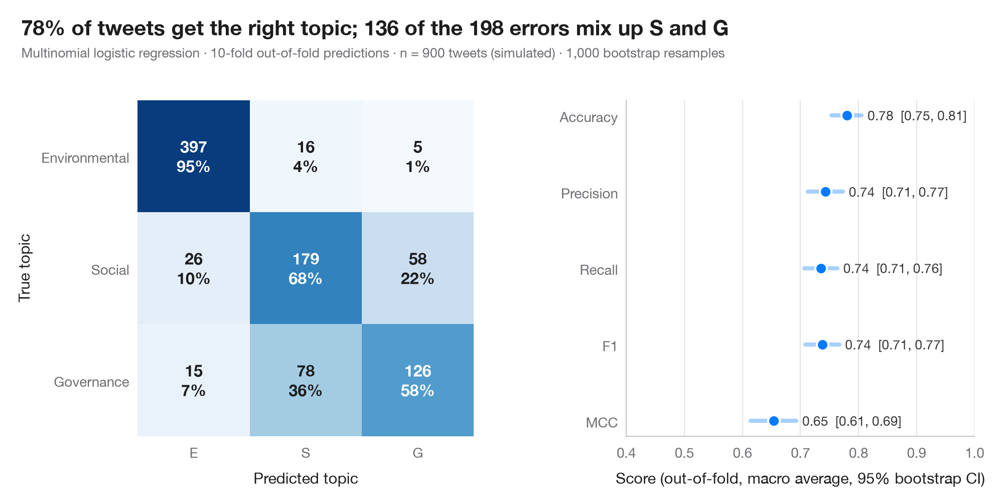

指標付き混同行列
分類器がツイートを環境・社会・ガバナンスのトピックにどれだけ正しく振り分けるか。交差検証による 3 × 3 の混同行列に、指標のブートストラップ区間を添えます。

混同行列は、実際のクラスと予測されたクラスを掛け合わせた表です。各セルには件数と、その実際のクラス（行）に占める割合を示すので、対角線はそのまま各クラスの再現率として読め、対角線の外のセルはモデルがどのクラスを取り違えるかを示します。予測は out-of-fold（交差検証の検証側） の予測です。各観測値は、10 分割交差検証の中でその観測値を一度も見ていないモデルによって予測されます。つまり、新しいデータに対する混同行列の姿です。
例の舞台は、環境・社会・ガバナンス（ESG）に関する Twitter 上の会話を自然言語処理で描き出した Kouloukoui、de Marcellis-Warin、Gomes、Warin（2023 年、Journal of Cleaner Production）の研究です。データは説明のために シミュレーション したもので、論文のデータや結果では ありません。n = 900 件のツイートを、6 つの小さなトピック語彙（ESG の柱ごとに 2 つ）に含まれる語の出現数で表し、社会とガバナンスの語彙は意図的に重なるようにしています。モデルは標準化した多項ロジスティック回帰で、予測は cross_val_predict、指標（適合率・再現率・F1 のマクロ平均、正解率、MCC、いずれも 95% ブートストラップ区間付き）は sklearn.metrics によります。
コードおよび図中のテキストは英語です。
import matplotlib.pyplot as plt
import numpy as np
from sklearn.linear_model import LogisticRegression
from sklearn.metrics import (accuracy_score, confusion_matrix, f1_score, matthews_corrcoef,
precision_score, recall_score)
from sklearn.model_selection import StratifiedKFold, cross_val_predict
from sklearn.pipeline import make_pipeline
from sklearn.preprocessing import StandardScaler
# Simulated data, set in the context of Kouloukoui et al. (2023) [kouloukoui2023esg]
# Data: 900 tweets, true topic 0 = E, 1 = S, 2 = G; features = hits on six topic lexicons
rng = np.random.default_rng(2023)
labels = ["Environmental", "Social", "Governance"]
y = rng.choice(3, size=900, p=[0.45, 0.30, 0.25])
lam = np.array([[2.0, 1.6, 0.3, 0.3, 0.2, 0.2], # expected lexicon hits for an E tweet
[0.3, 0.3, 1.4, 1.0, 0.8, 0.6], # S tweets borrow governance words ...
[0.3, 0.2, 0.7, 0.6, 1.3, 1.1]]) # ... and G tweets social ones
X = np.log1p(rng.poisson(lam[y]))
# Out-of-fold predictions from a 10-fold cross-validation
model = make_pipeline(StandardScaler(), LogisticRegression(max_iter=1000))
cv = StratifiedKFold(n_splits=10, shuffle=True, random_state=0)
pred = cross_val_predict(model, X, y, cv=cv)
cm = confusion_matrix(y, pred)
# Metrics (macro-averaged over the three classes) with 95% bootstrap intervals
metrics = {"Accuracy": accuracy_score,
"Precision": lambda a, b: precision_score(a, b, average="macro"),
"Recall": lambda a, b: recall_score(a, b, average="macro"),
"F1": lambda a, b: f1_score(a, b, average="macro"), "MCC": matthews_corrcoef}
boot = {k: [] for k in metrics}
for _ in range(1000):
i = rng.integers(0, len(y), len(y))
for k, f in metrics.items():
boot[k].append(f(y[i], pred[i]))
point = {k: f(y, pred) for k, f in metrics.items()}
ci = {k: np.percentile(v, [2.5, 97.5]) for k, v in boot.items()}
plt.rcParams["figure.constrained_layout.use"] = False # manual margins leave room for the subtitle
fig, (ax, axm) = plt.subplots(1, 2, figsize=(10, 5), gridspec_kw=dict(width_ratios=(1, 1)))
fig.subplots_adjust(left=0.13, right=0.97, top=0.80, bottom=0.13, wspace=0.42)
# Confusion matrix: colour = share of the true class
share = cm / cm.sum(axis=1, keepdims=True)
ax.imshow(share, cmap="Blues", vmin=0, vmax=1)
for r in range(3):
for c in range(3):
ax.text(c, r, f"{cm[r, c]}\n{share[r, c]:.0%}", ha="center", va="center", fontsize=11.5,
fontweight="semibold", color="white" if share[r, c] > 0.5 else "#1d1d1f")
ax.set_xticks(range(3), ["E", "S", "G"])
ax.set_yticks(range(3), labels)
ax.set_xlabel("Predicted topic")
ax.set_ylabel("True topic")
ax.grid(False)
for s in ax.spines.values():
s.set_visible(False)
# Metrics with intervals
names = list(metrics)[::-1]
for j, k in enumerate(names):
axm.plot(ci[k], [j, j], color="#007AFF", lw=3, solid_capstyle="round", alpha=0.35)
axm.scatter(point[k], j, s=70, color="#007AFF", zorder=3, edgecolor="white", lw=1.5)
axm.text(ci[k][1] + 0.01, j, f"{point[k]:.2f} [{ci[k][0]:.2f}, {ci[k][1]:.2f}]",
va="center", fontsize=9.5, color="#3A3A3C")
axm.set_yticks(range(len(names)), names)
axm.set_xlim(0.4, 1.0)
axm.set_xlabel("Score (out-of-fold, macro average, 95% bootstrap CI)")
axm.grid(axis="x"); axm.grid(axis="y", visible=False)
sg = cm[1, 2] + cm[2, 1]
fig.suptitle(f"{point['Accuracy']:.0%} of tweets get the right topic; {sg} of the "
f"{len(y) - np.trace(cm)} errors mix up S and G", x=0.02, y=0.97, ha="left")
fig.text(0.02, 0.885, f"Multinomial logistic regression · 10-fold out-of-fold predictions · n = {len(y)} "
"tweets (simulated) · 1,000 bootstrap resamples", fontsize=9.5, color="#6E6E73")
plt.show()
図にはオプションの PyStatlas スタイル を使用しています。同じ見た目にするには plt.style.use("pystatlas.mplstyle") を追加してください。
データの出典
- Simulated data. Simulated data with a fixed random seed, created for this example.
No real respondents, documents or measurements: the numbers only illustrate how the chart and its statistics work. - Kouloukoui et al. (2023), global conversations on ESG topics. Kouloukoui, D., de Marcellis-Warin, N., Gomes, S. M. S., & Warin, T. (2023). Mapping global conversations on twitter about environmental, social, and governance topics through natural language processing. Journal of Cleaner Production, 414, 137369. https://doi.org/10.1016/j.jclepro.2023.137369
The example is set in the context of this paper; unless its description says otherwise, the numbers are simulated and are not the paper's data or results.
これらの例は統計手法を説明するためのものです。図のタイトルは、この特定のデータ（多くは小規模で、古く、部分的な標本）で図が示す内容を述べたものであり、実質的な問いに対する著者の立場ではありません。解釈、背景、データの質については、ここに挙げた元の出典を参照してください。
引用方法
PyStatlas は Thierry Warin が作成・運営しています。研究や業務に役立った場合は、ぜひ引用してください。
Warin, T. (2026). Confusion matrix with metrics. In PyStatlas: A Python Gallery of Statistical Graphics for the Social Sciences. https://warint.github.io/pystatlas/machine-learning/confusion-matrix/
@misc{warin2026statlas,
author = {Warin, Thierry},
title = {PyStatlas: A Python Gallery of Statistical Graphics for the Social Sciences},
year = {2026},
howpublished = {\url{https://warint.github.io/pystatlas/}},
note = {Source code: https://github.com/warint/pystatlas}
}機械学習のその他のグラフ

適合率–再現率曲線
COVID-19 のフェイクニュースを共有する Facebook ユーザーを予測する 2 つの分類器の、交差検証による適合率–再現率曲線。平均適合率と無技能の基準線を示します。
yardstick::pr_curve() + autoplot()
学習曲線
学習データが増えるにつれての学習時正解率と交差検証正解率。COVID-19 のフェイクニュースを共有する Facebook ユーザーを予測する 2 つのモデルで比べます。
caret::learning_curve_dat() + ggplot()
交差検証によるモデル比較
生産ロットの廃棄率を予測する 6 つのモデルの分割ごとの R²。平均と補正済み 95% 区間を添えます。
caret::resamples() + bwplot() / tune::autoplot()